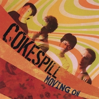

アルバム

MySpace と Pure Volume で数曲聴けます。 |
Prepare yourself for a musically and thematically diverse road trip with Moving On, the debut project from Cokespill. These Japan natives have crafted an album that shows the band's strong Christian faith, but successfully finds a balance between testimony and humor. With the opening track, the listener is greeted by strong guitar punches intertwined with piano interludes while proclaiming "Whatever You need to do, Lord, do in me." The band wastes no time with continuing the upbeat nature of the album with "LOL," a satire of the MSN world which is fueled by hooky lyrics á la Relient K backed by windows-down driving music that could make one reminisce of that little tune known as "Stacy's Mom." Following this is "I Wanna See Jesus," a funky Fruit-Of-The-Spirit ditty. "Chambers," a piano dominated jamming session, is an instrumental interlude which segues into the rest of the album. The more mellow side of Cokespill is found starting with "I Feel For You," a stripped-down acoustic guitar number with gentle vocal harmonies, finding the lead singer intimately reaching out to a hurting friend. Other tender moments on the album include the album's title track, which is the strongest song on the record. Opening with a haunting guitar and keyboard intro, the vocalist finds himself battling with the pains of a shattered relationship, pleading "Heal my wounds, oh God," then triumphantly "Free my mind, break me loose!" along with a guitar outburst to emphasize the emotion. While most of the album is original material, Cokespill throws in two popular worship songs with an entirely new twist. First is a full-out gospel rendition of "There Is None Like You." Midway through the performance, the band takes you back to their roots with a Japanese-version of the song's chorus. The second selection, "Heart Of Worship,"gets a dynamic workout from its common ballad form as Cokespill vamps up the electric guitars. Moving On is a sure sign that Cokespill is just beginning to unpack its talents. Come discover an album that will entertain your senses ans speak to your heart. by Todd Foley |